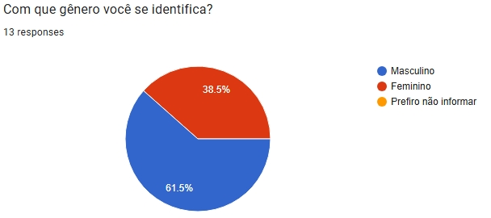

Questionário – Projeto Dicas de Estágio
Introdução
Um dos mecanismos mais versáteis para elicitação de requisitos, visando entender as necessidades e dores de um grande grupo de usuários, trata-se da técnica de Questionários [1, p.125]. Nessa técnica, um dos objetivos centrais é a coleta rápida de dados, principalmente quantitativos, de muitos usuários; esse fato também se traduz como uma de suas vantagens, além de ser relativamente barato, ainda mais em questionários associados à pesquisas digitais, isto é, que não se traduzir em divulgação impressa [2, p. 144, Tabela 5.1]. Contudo, uma das premissas do questionário, é o avaliador ser experiente para evitar perguntas inadequadas ao contexto ou que induzem certas respostas [2, p. 144, Tabela 5.1; 1, p.125]. Enfim, diferentemente de entrevistas e grupos focais, questionários se privilegiam de amostras de dados realmente grandes, alcançando até mesmo pessoas dispersas geograficamente [2, p. 150, cap. 5.5.2].
Outro ponto a ressaltar é que questionários, assim como entrevistas, podem conter perguntas fechadas e perguntas abertas, mas com preferência às fechadas, de preenchimento rápido e fácil análise [2, p.150, 5.5.2]. Isto, pois, em questionários não se deve fazer muitas perguntas abertas, pois tende a desmotivar os respondentes à completá-los, o que reduz a taxa de respostas. Logo, perguntas fechadas, sendo mais comumente usado, quando temos uma boa noção das respostas mais prováveis e, assim, desejamos conhecer a proporção numa amostra mais ampla [2, p. 151, 5.5.2]. Além disso, por vezes, os questionários são utilizados em conjunto com entrevistas ou técnicas com premissas semelhantes, onde, após entrevistas exploratórias,questionários podem ser utilizados para corroborar a entrevista e validar se as mesmas traduzem a relevância do público-alvo maior. Caso os questionários evidenciem estatísticas inesperadas, novas entrevistas podem ser conduzidas para descobrir os motivos dessa surpresa [2, p. 151 e p. 154, 5.5.2]. Portanto, depreende-se que o questionário é, de fato, uma técnica de grande relevância, trazendo uma versatilidade e abrangência maior que em outras técnicas, como entrevistas. Assim, dado suas considerações e ressalvas, pode auxiliar substancialmente no processo de elicitação de requisitos, seja por disponibilizar um meio fácil de comprovar a relevância de elicitações anteriores, seja por possibilitar, também, a elicitação de novos, sendo esse último, de grande interesse para presente projeto.
Metodologia
Com o intuito de refinar a elicitação da entrega 1 (módulo base), a equipe optou por utilizar a técnica de questionário, principalmente por seu baixo custo e rapidez. Nesse sentido, foi elaborado dois fluxo principais: respondentes no contexto de alunos da UnB/FCTE (Faculdade de Ciência e Tecnologia em Engenharia) e outro para pessoas externas a esse contexto, mas que queiram contribuir. Para o primeiro fluxo, 20 perguntas foram propostas, das quais 3 são perguntas abertas e 17 fechadas. Para o segundo fluxo, foram 12 perguntas, sendo 4 abertas e 8 fechadas. Ademais, antes de tais perguntas, há uma pergunta prévia, explicando acerca da pesquisa e, em seguida, o termo de consentimento segundo a Lei Geral de Proteção de Dados, o qual direciona para as questões propriamente da pesquisa ou, se recusado, para o término do mesmo.
O presente formulário foi divulgado em grupos de Telegram de alunos e interessados da UnB - FCTE e grupos de WhatsApp também associados à UnB. O periodo de abertura do formulário foi de 12/09/2025 até 14/09/2025, o que se traduz na duração de 3 dias. Além disso, a ferramenta utilizada foi o Google Forms, disponibilizadda gratuitamente pela google, possibilitando a confeção do artefato e disponibilização via URL aos participantes.
Ainda nesse contexto, segue abaixo as perguntas do questionário, o qual na tabela 1 (Fluxo Base) trata do fluxo inicial, que é desemembrado em dois outros fluxos: Fluxo principal (Tabela 2) - referente aos alunos UnB-FCTE - e Fluxo alternativo (Tabela 3) - Aqueles que não estão no fluxo anterior -, trazendo uma pespectiva externa.
Tabela 1: Fluxo Base
| N° da questão | Pergunta | Tipo |
|---|---|---|
| 1 | Você autoriza que as informações fornecidas neste formulário sejam utilizadas para fins acadêmicos? | Fechada |
| 2 | Qual sua faixa etária? | Fechada |
| 3 | Com que gênero você se identifica? | Fechada |
| 4 | Qual seu nível de familiaridade com aplicativos de emprego/estágio similares? | Fechada |
| 5 | Qual a sua preferência para o tipo de aplicação que prefere utilizar para acessar o "DicasDeEstágio"? | Fechada |
| 6 | Situação de estágio atual | Fechada |
| 7 | Onde você busca ou buscava vagas? | Fechada |
| 8 | Você é aluno da FCTE-UnB? | Fechada |
Tabela 2: Fluxo Principal (Alunos UnB-FCTE)
| N° da questão | Pergunta | Tipo |
|---|---|---|
| 14 | Você é aluno(a) de qual curso da UnB? | Fechada |
| 15 | Em qual período/semestre você está? | Fechada |
| 16 | Sua(s) maior(es) dificuldade(s) para conseguir estágio é: | Fechada |
| 17 | Que tipo de suporte você espera da sua faculdade/coordenação no processo de estágio? | Aberta |
| 18 | O quanto você se sente preparado(a) para processos seletivos (currículo, entrevista, testes)? | Fechada |
| 19 | O quanto as oportunidades divulgadas pela sua faculdade/coordenação de curso atendem seu curso/interesse? | Fechada |
| 20 | O fluxo apresentado no protótipo foi claro e fácil de entender. | Fechada |
| 21 | Qual(is) parte(s) do protótipo você achou mais útil? | Fechada |
| 22 | Quais das funcionalidades você achou mais importante? | Fechada |
| 23 | Qual(is) das funcionalidades abaixo você gostaria que existisse no protótipo/aplicação? | Fechada |
| 24 | Há alguma funcionalidade no protótipo que você considera desnecessária, pouco útil ou que deveria ser repensada? | Aberta |
| 25 | Em uma escala de 1 a 5, quão satisfeito você ficou com o protótipo? | Fechada |
| 26 | Existe alguma informação, sugestão ou experiência que você considera relevante e que ainda não foi abordada? | Aberta |
Tabela 3: Fluxo Alternativo (Não alunos UnB-FCTE)
| N° da questão | Pergunta | Tipo |
|---|---|---|
| 9 | Na sua visão, qual seria o papel de um sistema como o "DicasDeEstágio" dentro da universidade ou no mercado? | Aberta |
| 10 | Que tipo de impacto essa aplicação poderia gerar para estudantes, docentes ou empregadores? | Aberta |
| 11 | Você enxerga algum risco, limitação ou desafio na implementação de um sistema como este? | Aberta |
| 12 | Qual(is) das funcionalidades abaixo você gostaria que existisse no protótipo/aplicação? | Fechada |
| 13 | Você gostaria de sugerir alguma funcionalidade, abordagem ou parceria que poderia fortalecer o "DicasDeEstágio"? | Aberta |
Para mais detalhes do formulário, acesse: estrutura base do formulário
Antes dos resultados, é importante ressaltar que a data de disponibilização do formulário (tabela 1) é bem curta para os padrões de questionário convencional, o que, por consequência, implica em um número menor de respostas, ainda mais associado ao contexto da aplicação. Mesmo assim, espera-se alcançar algumas validações de protótipo, tal como novas ideias e possíveis novos requisitos, alinhados à análise de necessidades e dores dos respondentes.
Resultados
A seguir, são apresentados os principais resultados obtidos a partir das respostas ao questionário, ilustrados por gráficos e acompanhados de análises qualitativas. Os dados refletem o perfil dos participantes, suas dificuldades, expectativas em relação ao processo de estágio e percepções sobre o protótipo desenvolvido. Essa análise visa identificar pontos de melhoria e validar requisitos para o aprimoramento do sistema "Dicas de Estágio".
Perfil do Usuário
Faixa etária
Figura 1: Faixa etária dos participantes

Fonte: Formulário de elicitação.
Gênero
Figura 2: Gênero dos participantes

Fonte: Formulário de elicitação.
Familiaridade com aplicativos de estágio/emprego
Figura 3: Familiaridade com aplicativos de estágio/emprego

Fonte: Formulário de elicitação.
Preferência de tipo de aplicação (web, mobile, desktop)
Figura 4: Preferência de tipo de aplicação

Fonte: Formulário de elicitação.
Situação atual (nunca estagiou, já estagiou, etc.)
Figura 5: Situação atual de estágio

Fonte: Formulário de elicitação.
Onde você busca ou buscava vagas?
Figura 6: Locais onde os participantes buscam vagas

Fonte: Formulário de elicitação.
Você é aluno da FCTE-UnB?
Figura 7: Respostas sobre ser aluno da FCTE-UnB

Fonte: Formulário de elicitação.
Curso
Figura 8: Distribuição dos cursos dos participantes

Fonte: Formulário de elicitação.
Período/Semestre
Figura 9: Distribuição dos períodos/semestres dos participantes

Fonte: Formulário de elicitação.
Dificuldades e Expectativas
Maiores dificuldades para conseguir estágio
Figura 10: Principais dificuldades para conseguir estágio

Fonte: Formulário de elicitação.
Que tipo de suporte espera da faculdade/coordenação?
- Guia claro sobre o processo de estágio, incluindo orientações para preenchimento no SIGAA, regras e procedimentos.
- Mural de vagas exclusivo para alunos em estágio obrigatório.
- Maior apoio institucional para conectar estudantes a empresas.
- Suporte contínuo para esclarecimento de dúvidas em todas as etapas do estágio, desde a busca por vagas até a conclusão do processo.
O quanto você se sente preparado para processos seletivos
Figura 11: Nível de preparo para processos seletivos

Fonte: Formulário de elicitação.
O quanto as oportunidades divulgadas pela faculdade atendem ao seu interesse?
Figura 12: Avaliação das oportunidades divulgadas pela faculdade

Fonte: Formulário de elicitação.
Validação do Protótipo
Para as questões associadas à validação do protótipo, clique aqui para pode ter acesso a eles.
Clareza do fluxo do protótipo
Figura 13: Clareza do fluxo do protótipo

Fonte: Formulário de elicitação.
Partes do protótipo mais úteis
Figura 14: Partes do protótipo consideradas mais úteis

Fonte: Formulário de elicitação.
Funcionalidades mais importantes
Figura 15: Funcionalidades consideradas mais importantes

Fonte: Formulário de elicitação.
Funcionalidades desejadas no protótipo
Figura 16: Funcionalidades desejadas no protótipo

Fonte: Formulário de elicitação.
Funcionalidades consideradas desnecessárias
- Dúvidas sobre quais funcionalidades, além das avaliações, estão propostas no protótipo.
- Percepção de semelhança com o Glassdoor, questionando a confiabilidade e o diferencial do sistema.
- Questionamento sobre o motivo para utilizar o DicasDeEstágio em vez de outras plataformas.
Nível de satisfação com o protótipo
Figura 17: Nível de satisfação com o protótipo

Fonte: Formulário de elicitação.
Considerações adicionais
- Sugerida inclusão de um passo a passo detalhado sobre o processo de homologação de estágio na UnB, para sanar dúvidas frequentes dos alunos.
- Recomendada a criação de fluxograma ou instruções claras sobre formalização do estágio: assinatura de contrato, itens obrigatórios e proibidos, contatos importantes e como identificar o professor orientador.
- Na tela 4 do protótipo, sugerida:
- Opção para tornar avaliações anônimas.
- Campo opcional para informar salário.
- Campo para dicas sobre a empresa (ex: período de seleção, canais de obtenção da vaga, contatos internos).
Conclusão
A pesquisa, com 12 participantes, confirmou a importância do Dicas de Estágio como ferramenta de apoio aos estudantes. Os resultados evidenciaram um forte interesse por versões web e mobile, além de apontarem como principais dificuldades a falta de experiência, a busca por vagas alinhadas ao perfil e a preparação de currículo. Os respondentes também expressaram a necessidade de um suporte institucional mais ativo, incluindo mural de vagas, orientações claras e guias detalhados.
Apesar do número reduzido de respostas, o que limita a generalização dos resultados, foi possível extrair requisitos-chave e obter feedbacks qualitativos relevantes dos participantes. As contribuições recebidas permitiram identificar pontos de melhoria no protótipo e sugerir funcionalidades alinhadas às reais necessidades dos usuários. Assim, mesmo com uma amostra pequena, o questionário cumpriu seu papel, mesmo que com ressalvas, de validar hipóteses, levantar novas demandas e direcionar os próximos passos do desenvolvimento do sistema.
O protótipo foi bem recebido, mas surgiram sugestões relevantes, como o aprimoramento do fluxo de homologação de estágio e a inclusão de funcionalidades adicionais, como avaliações anônimas e campos para dicas sobre empresas. Esses insights serão fundamentais para orientar os próximos ajustes no desenvolvimento do sistema e na priorização das funcionalidades, visando atender de forma mais efetiva às necessidades dos usuários.
Tabela de Requisitos Elicitados – Questionário
| ID | Descrição | Funcional ou Não Funcional |
|---|---|---|
| Q01 | O sistema deve permitir avaliações anônimas de empresas. | Funcional |
| Q02 | O sistema deve possuir campo opcional para informar salário na avaliação. | Funcional |
| Q03 | O sistema deve permitir campo para dicas sobre empresas (ex: período de seleção, contatos internos). | Funcional |
| Q04 | O sistema deve fornecer passo a passo detalhado sobre homologação de estágio na UnB. | Funcional |
| Q05 | O sistema deve apresentar fluxograma ou instruções claras sobre formalização do estágio. | Funcional |
| Q06 | O sistema deve disponibilizar mural de vagas exclusivo para alunos em estágio obrigatório. | Funcional |
| Q07 | O sistema deve oferecer suporte institucional para dúvidas em todas as etapas do estágio. | Funcional |
| Q08 | O sistema deve ser acessível via web e mobile. | Não funcional |
| Q09 | O sistema deve ser fácil de usar e ter fluxo claro. | Não funcional |
| Q10 | O sistema deve permitir busca de vagas alinhadas ao perfil do usuário. | Funcional |
| Q11 | O sistema deve apoiar na preparação de currículo e processos seletivos. | Funcional |
| Q12 | O sistema deve permitir sugestões de funcionalidades por parte dos usuários. | Funcional |
Fonte: Resultados do questionário de elicitação. Autores: Mateus, Paulo.
Referência Bibliográfica
[1] WIEGERS, Karl E.; BEATTY, Joy. Software Requirements. 3. ed. Redmond: Microsoft Press, 2013.
[2] BARBOSA, Simone; SILVA, Bruno. Interação humano-computador. Elsevier Brasil, 2010.
{kind=link}
Histórico de Versões
| Versão | Data | Descrição | Autor | Revisor |
|---|---|---|---|---|
| 1.0 | 14/09/2025 | Criação do questionário e documentação | Mateus, Paulo | Mateus |
| 1.1 | 22/09/2025 | Refinamento e Finalização do documento | Mateus | Paulo |